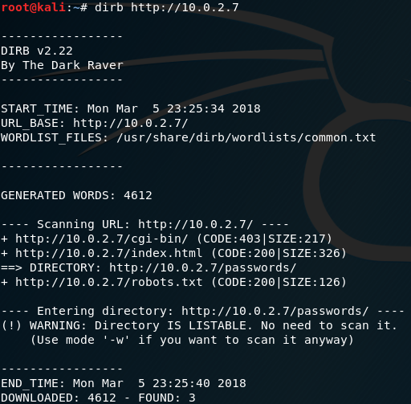
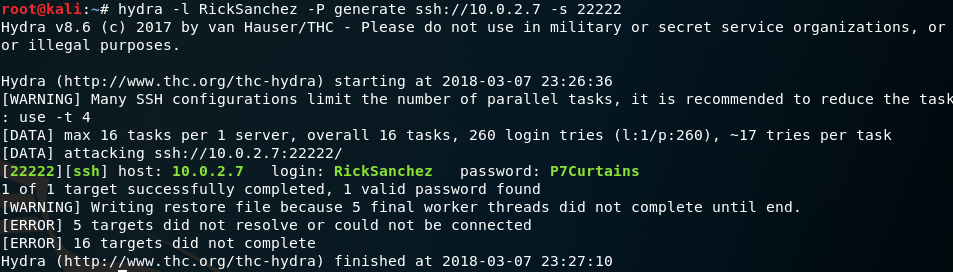

First of all do a scan of the network to find the ip of th vm:
arp-scan
arp-scan -l -I eth0
-l --localnetgenerate addresses from the local network-Ispecify the network interface

10.0.2.1/3are used by virtualbox.10.0.2.7this one is instersting !
Scan for the most commons names
dirb
dirb http://10.0.2.7
by defaut dirb scan the port 80.

http://10.0.2.7/passwords/ that must be good..
Checking the passwords/ direcory

Is that the frist flag ??

Yes it is, nice ! Let's go on. We'll now check the other page:

Humm.. nothing here but there was a password but Rick has hidden it. and if we looking for hidden things..

hidden things we found !!
- we've got a password
winterlet's keept that in mind.
Checking the robot.txt file

root_shell.cgi looks nice but it's a fake, there is nothing.
maybe we'll get more luck with tracertool.cgi

if we submit a random value like AAAAAAAAAAAA it print nothing
but if we give a good parameter to the Morty's tracertool it returns traceroute to localhost (127.0.0.1)
- traceroute is a linux cmd.
*That's mean somehow there is a command executed in the shell.
- So maybe we can use the propriety of the shell to get more liberty with this tool.
We can try to use the
;


lets take a look at the /etc/passwd file

oops cat seems broken ^^ tail is a good alternative

We have now 3 username: RickSanchez Morty Summer
quick step back, why can we execute several commands with ;
take a look at the source code of tracertool.cgi

- it first "reverse" the html encoding with several
sed - then
evaloftraceroute + $our_string
from the man:
eval Evaluate several commands/arguments Syntax eval [arguments] The arguments are concatenated together into a single command, which is then read and executed, and its exit status returned as the exit status of eval. If there are no arguments or only empty arguments, the return status is zero.
that mean eval just give the whole chain to bash and this one interpret it.
we can't do much more with the apache user.
More Scans ..
nmap
nmap -p- -T5 -A -sV 10.0.2.7
-
-p-scan from port 1 to port 65586 -
-T5to scan faster -
-Awhich turns on version detection and other Advanced and Aggressive features -
-sVTo enable version detection

Port 21
ftp classic, we can see we have acces to the anonymous user and there is probably a flag here:

Port 22
nmap guess that is a ssh port because it's on port 22 but it's not.
Port 9090
just check it on your browser:

nice one more !
Port 60000
reverse shell from Rick.
let's try to connect with nc

Port 22222
ssh port, we need a username and a password.
so far we discover 3 usernames RickSnachez Morty Summer and one password winter (:80/passwords/passwords.html)

nice one more flag found and we are on the machine !
with some digging we find out that we have the right permissions to access to Morty's home.
Morty has a zip file protected by a password. And an img who's probably hide the password.
the password seems to look like Meeseek

all right ! next step hack Rick's safe ! after some trys i realize that the flag we got right before is a little weird

we got a hint for the last lvl
just create a passwd list with this pattern:
UP_LETTER + DIGIT + Curtains (the band group is The Flesh Curtain, and curtains seems right for the passwd )
a little and dirty python script + hydra


Root -- Last Flag :D